明故宫虽已湮没于历史长河，但通过详实的史料记载，以及以明故宫为蓝本建造的北京故宫，我们得以复原其恢弘的中轴线建筑布局。本页面依托中轴线脉络，依次展现明故宫从南至北的核心建筑，并对比其与北京故宫对应建筑的异同，还原这座明初皇家宫殿的规制与风貌。
明故宫外郭城的正南门，是进入皇城的第一道门户，始建于明初，为南京城南部重要的标志性建筑，整体形制恢弘，是明代都城城门建筑的典型代表，兼具防御与礼仪功能。
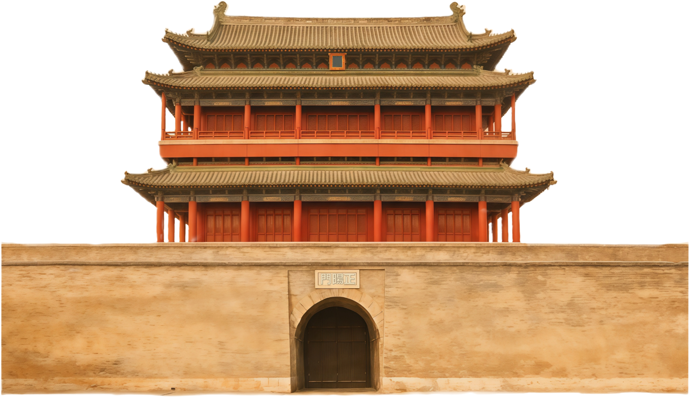
北京正阳门（前门）虽与明故宫正阳门同名，但并非故宫核心区域建筑，仅为北京内城正南门；北京故宫的正南门户为天安门（承天门），相较于明故宫正阳门，功能更偏向皇城礼仪正门，建筑规制也更为繁复。
明故宫皇城的正南门，位于正阳门北侧，是进入宫城前的重要门户，建筑为单檐歇山顶，面阔五间，是明代皇城门户的标准形制，象征皇权的威严与等级。
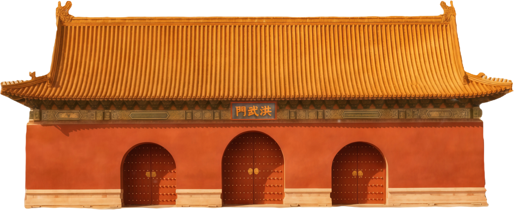
北京故宫的大明门（清代改称大清门）对应明故宫洪武门的功能，是皇城正南门；相较于明故宫洪武门，北京大明门规制更高，面阔增至九间，且与天安门形成更纵深的礼仪序列。
明故宫宫城的正南第一道门，连接洪武门与端门，建筑形制为重檐歇山顶，是明代宫廷礼仪的重要节点，凡重大典礼均需从此门出入，彰显宫城的庄重氛围。
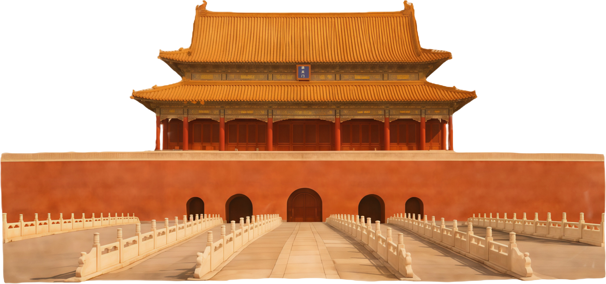
北京天安门原名亦为承天门，是故宫皇城的核心门户；相较于明故宫承天门，北京天安门体量更大，面阔九间、进深五间，融合了更多的装饰元素，成为明清王朝最重要的礼仪建筑之一。
明故宫承天门北侧的重要宫门，形制与承天门相近，为单檐歇山顶，是宫城南部的缓冲节点，主要用于存放皇家仪仗，也是百官朝觐时的等候区域。
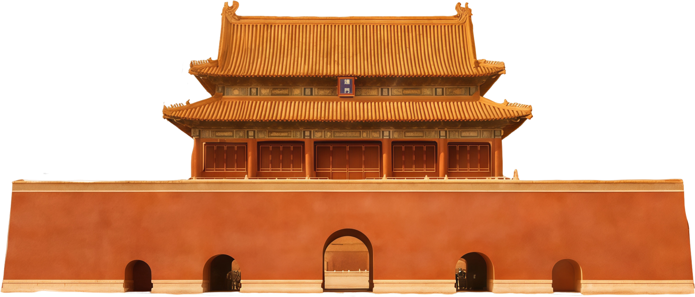
北京故宫端门直接承袭明故宫端门的功能与名称，建筑形制基本一致，但在细节装饰上更为精致，且与天安门、午门形成更完整的宫城南部门户序列，空间层次感更强。
明故宫宫城的正南门（午门），又称午朝门，是宫城的核心门户，建筑为凹字形布局，上设城楼，是皇帝举行献俘、颁诏等重大仪式的场所，彰显皇权至高无上。
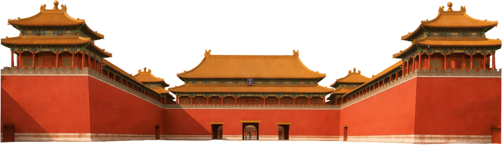
北京故宫午门完全承袭明故宫午朝门的凹字形形制，但体量更为宏大，增设了左右掖门，且城楼为重檐庑殿顶，等级更高；功能上延续了献俘、颁诏等礼仪，是故宫最具标志性的建筑之一。
明故宫外朝区域的核心门户，位于午朝门北侧，是皇帝日常上朝听政、接见群臣的重要场所，建筑为单檐歇山顶，面阔五间，是外朝礼仪与行政功能的核心节点。
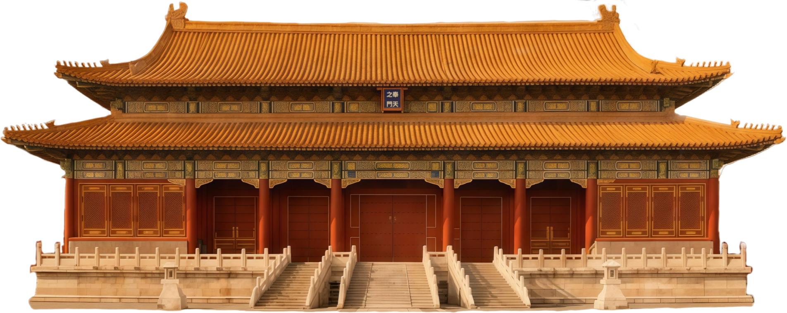
北京故宫太和门对应明故宫奉天门的功能，是外朝三大殿的门户；相较于奉天门，太和门面阔增至九间，为重檐歇山顶，建筑规制大幅提升，且门前增设铜狮等装饰，彰显皇权威仪。
明故宫外朝正殿，是皇帝举行登基、大婚、册立等重大典礼的核心建筑，面阔九间，重檐庑殿顶，为明代宫殿建筑的最高规制，是明初皇权的核心象征。
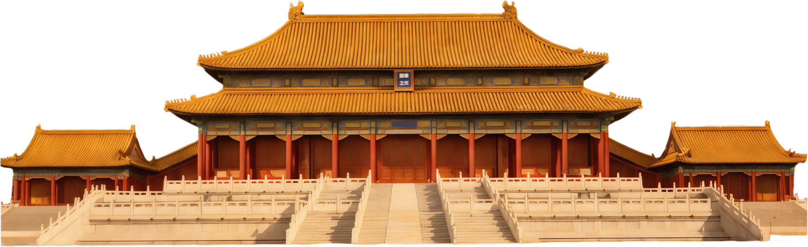
北京故宫太和殿（金銮殿）承袭明故宫奉天殿的功能与规制，是故宫体量最大的建筑；相较于奉天殿，太和殿面阔增至十一间，增设三层汉白玉台基，装饰更为繁复，成为中国古代宫殿建筑的巅峰之作。
明故宫外朝三大殿之一，位于奉天殿北侧，是皇帝大典前休息、接受内阁大臣奏事的场所，建筑为单檐攒尖顶，体量小于奉天殿，布局紧凑，功能偏向辅助性。
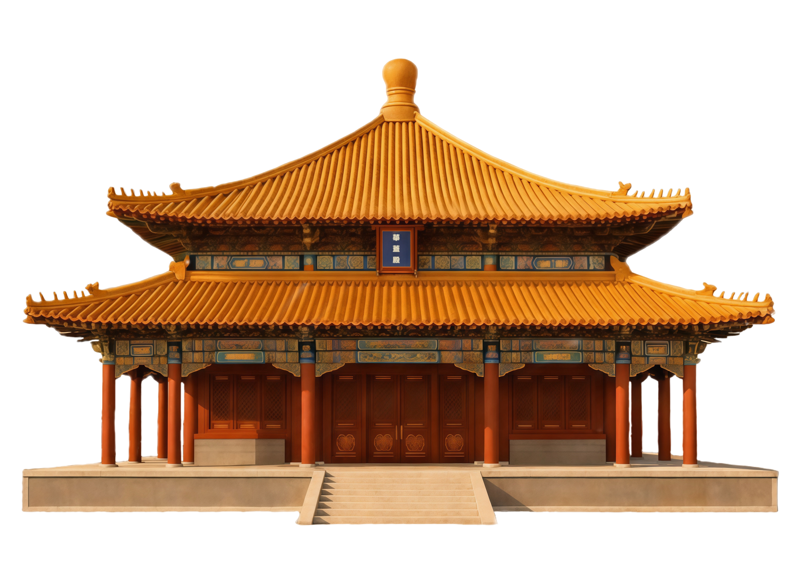
北京故宫中和殿对应明故宫华盖殿，功能一致；建筑形制改为四角攒尖顶，体量略有增大，装饰更为精致，是外朝三大殿中唯一未设廊柱的建筑，形制更为独特。
明故宫外朝三大殿的最后一座，是皇帝举行册立皇后、太子等仪式的场所，面阔七间，重檐歇山顶，建筑规制略低于奉天殿，是外朝礼仪序列的收尾。
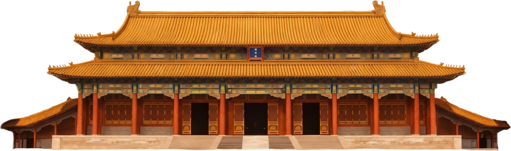
北京故宫保和殿对应明故宫谨身殿，清代新增殿试功能；建筑形制改为重檐歇山顶，面阔九间，体量更大，且台基与中和殿相连，形成更完整的外朝三大殿序列。
明故宫内廷区域的正南门，是外朝与内廷的分界门户，建筑为单檐歇山顶，面阔五间，是皇帝日常处理政务、召见军机大臣的重要场所，兼具门禁与行政功能。
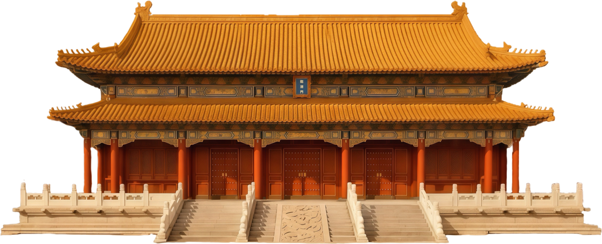
北京故宫乾清门直接承袭明故宫乾清门的功能与名称，建筑形制基本一致，但增设了鎏金铜狮、琉璃照壁等装饰，且门前广场更为开阔，成为内廷核心门户的标志性建筑。
明故宫内廷正殿，是皇帝的寝宫与日常理政之所，面阔九间，重檐庑殿顶，为内廷建筑的最高规制，殿内设有宝座、御案，是皇权在后宫的核心象征。
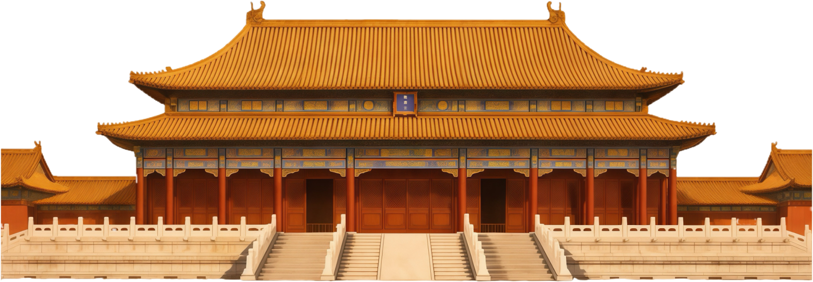
北京故宫乾清宫完全承袭明故宫乾清宫的功能与规制，清代增设“正大光明”匾，成为秘密立储的核心场所；建筑装饰更为奢华，且与交泰殿、坤宁宫形成更完整的后三宫序列。
明故宫内廷后三宫的最后一座，是皇后的寝宫，面阔九间，重檐歇山顶，建筑形制与乾清宫呼应，体现“乾坤对应”的礼制思想，是明代后宫的核心建筑。
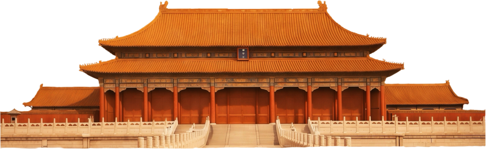
北京故宫坤宁宫承袭明故宫坤宁宫的名称，但清代功能大幅调整，东侧为皇后寝宫，西侧改为萨满祭祀场所；建筑形制保留基本布局，但内部装饰融入满族文化元素，与明故宫坤宁宫风格差异显著。
明故宫宫城的正北门，是内廷区域的最后一道门户，建筑为单檐歇山顶，面阔三间，兼具防御与交通功能，是宫城南北中轴线的终点。
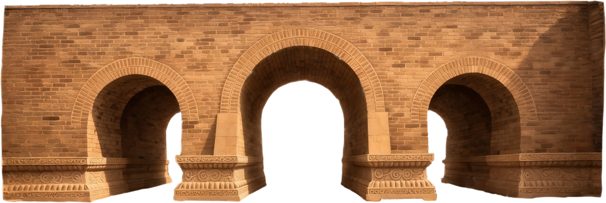
北京故宫神武门（清代避康熙讳改名）对应明故宫玄武门，是故宫北门；建筑形制改为重檐歇山顶，体量更大，且增设钟鼓设施，成为故宫日常门禁与报时的重要节点，功能更为丰富。